File: 000150.gt.txt (if the image is defective, simply delete all Arabic text and the line will be excluded)
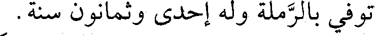
توفي بالرملة وله إحدى وثمانون سنة.
File: 000151.gt.txt (if the image is defective, simply delete all Arabic text and the line will be excluded)
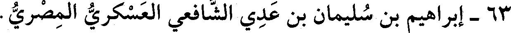
63 - إبراهيم بن سليمان بن عدي الشافعي العسكري المصري.
File: 000152.gt.txt (if the image is defective, simply delete all Arabic text and the line will be excluded)
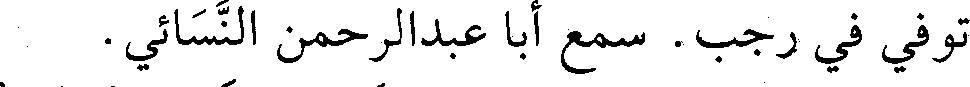
توفي في رجب. سمع أبا عبدالرحمن النسائي.
File: 000153.gt.txt (if the image is defective, simply delete all Arabic text and the line will be excluded)
64 - إسماعيل بن محمد بن علان الخولاني المصري المؤدب.
File: 000154.gt.txt (if the image is defective, simply delete all Arabic text and the line will be excluded)
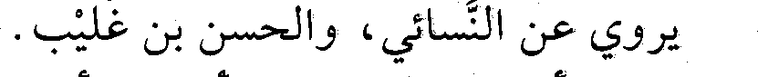
يروي عن النسائي، والحسن بن غليب.
File: 000155.gt.txt (if the image is defective, simply delete all Arabic text and the line will be excluded)
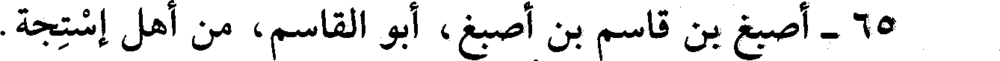
65 - أصبغ بن قاسم بن أصبغ، أبو القاسم، من أهل إستجة.
File: 000156.gt.txt (if the image is defective, simply delete all Arabic text and the line will be excluded)
سمع محمد بن عمر بن لبابة، وأحمد بن خالد بن الجباب، وحج
File: 000157.gt.txt (if the image is defective, simply delete all Arabic text and the line will be excluded)
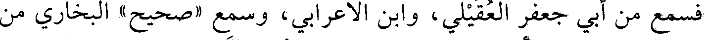
فسمع من أبي جعفر العقيلي، وابن الاعرابي، وسمع «صحيح» البخاري من
File: 000158.gt.txt (if the image is defective, simply delete all Arabic text and the line will be excluded)
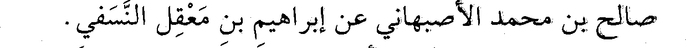
صالح بن محمد الأصبهاني، عن إبراهيم بن معقل النسفي.
File: 000159.gt.txt (if the image is defective, simply delete all Arabic text and the line will be excluded)
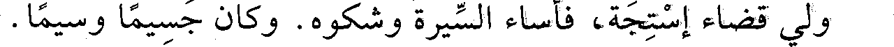
ولي قضاء إستجة، فأساء السيرة وشكوه. وكان جسيما وسيما.
File: 000160.gt.txt (if the image is defective, simply delete all Arabic text and the line will be excluded)
66 - ثابت بن سنان بن ثابت بن قرة، أبو الحسن الحراني الأصل
File: 000161.gt.txt (if the image is defective, simply delete all Arabic text and the line will be excluded)
الصابي، ثم البغدادي.
File: 000162.gt.txt (if the image is defective, simply delete all Arabic text and the line will be excluded)
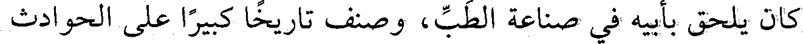
كان يلحق بأبيه في صناعة الطب، وصنف تاريخا كبيرا على الحوادث
File: 000163.gt.txt (if the image is defective, simply delete all Arabic text and the line will be excluded)
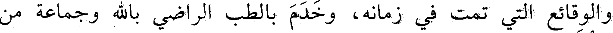
والوقائع التي تمت في زمانه، وخدم بالطب الراضي بالله وجماعة من
File: 000164.gt.txt (if the image is defective, simply delete all Arabic text and the line will be excluded)
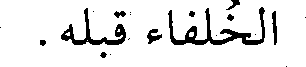
الخلفاء قبله.
File: 000165.gt.txt (if the image is defective, simply delete all Arabic text and the line will be excluded)
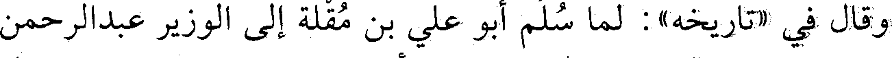
وقال في «تاريخه» : لما سلم أبو علي بن مقلة إلى الوزير عبدالرحمن
File: 000166.gt.txt (if the image is defective, simply delete all Arabic text and the line will be excluded)
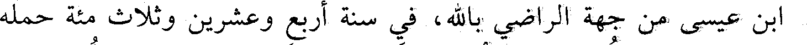
بن عيسى من جهة الراضي بالله، في سنة أربع وعشرين وثلاث مئة حمله
File: 000167.gt.txt (if the image is defective, simply delete all Arabic text and the line will be excluded)
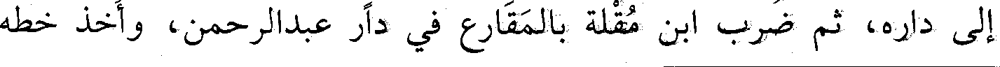
إلى داره، ثم ضرب ابن مقلة بالمقارع في دار عبدالرحمن، وأخذ خطه
File: 000168.gt.txt (if the image is defective, simply delete all Arabic text and the line will be excluded)
211
File: 000169.gt.txt (if the image is defective, simply delete all Arabic text and the line will be excluded)
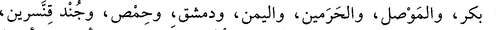
بكر، والموصل، والحرمين، واليمن، ودمشق، وحمص، وجند قنسرين،
File: 000170.gt.txt (if the image is defective, simply delete all Arabic text and the line will be excluded)
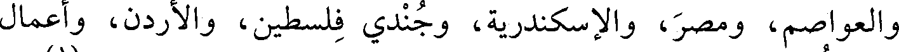
والعواصم، ومصر، والإسكندرية، وجندي فلسطين، والأردن، وأعمال
File: 000171.gt.txt (if the image is defective, simply delete all Arabic text and the line will be excluded)
ذلك كلها، ومايجري من ذلك من الإشراف على من يختاره لنقائه(1) من
File: 000172.gt.txt (if the image is defective, simply delete all Arabic text and the line will be excluded)
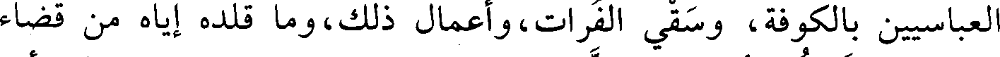
العباسيين بالكوفة، وسقي الفرات، وأعمال ذلك، وما قلده إياه من قضاء
File: 000173.gt.txt (if the image is defective, simply delete all Arabic text and the line will be excluded)
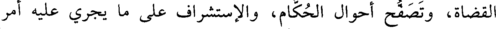
القضاة، وتصفح أحوال الحكام، والإستشراف على ما يجري عليه أمر
File: 000174.gt.txt (if the image is defective, simply delete all Arabic text and the line will be excluded)
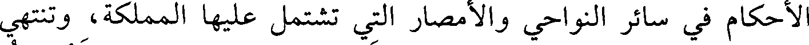
الأحكام في سائر النواحي والأمصار التي تشتمل عليها المملكة، وتنتهي
File: 000175.gt.txt (if the image is defective, simply delete all Arabic text and the line will be excluded)
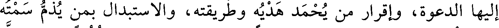
إليها الدعوة، وإقرار من يحمد هديه وطريقته، والاستبدال بمن يذم سمته
File: 000176.gt.txt (if the image is defective, simply delete all Arabic text and the line will be excluded)
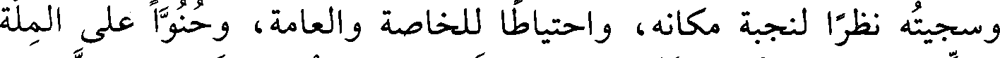
وسجيته نظرا لنجبة مكانه، واحتياطا للخاصة والعامة، وحنوا على الملة
File: 000177.gt.txt (if the image is defective, simply delete all Arabic text and the line will be excluded)
والذمة عن علم بأنه المقدم في بيته وشرفه، المبرز في عفافه، المزكي في
File: 000178.gt.txt (if the image is defective, simply delete all Arabic text and the line will be excluded)
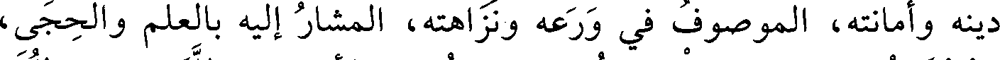
دينه وأمانته، الموصوف في ورعه ونزاهته، المشار إليه بالعلم والحجى،
File: 000179.gt.txt (if the image is defective, simply delete all Arabic text and the line will be excluded)
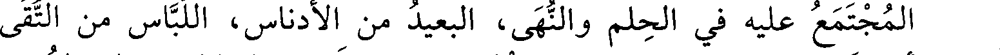
المجتمع عليه في الحلم والنهى، البعيد من الأدناس، اللباس من التقى
To Save: `Ctrl+s`, make sure to choose `Webpage, complete`!